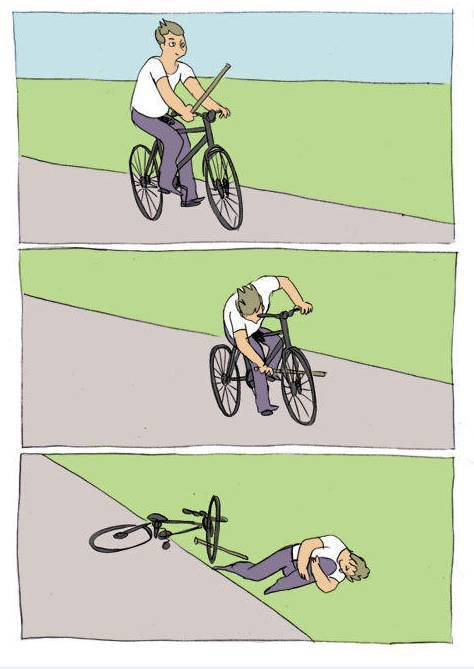
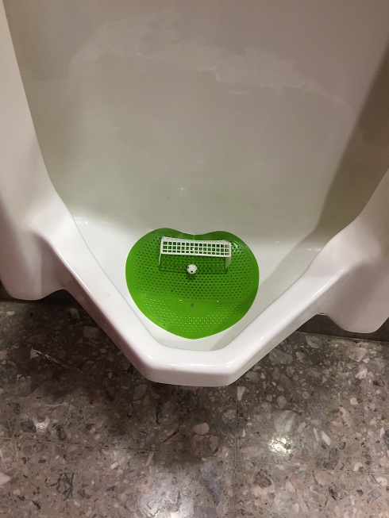

随记2017-12-01 21:02 这几个星期学到了很多，不仅对存储业界有了直观的认识，更从前辈同行身上获益匪浅。 有两个感想：再大的事情，也许决定命运的就是那么一两个细节，压倒天平的往往是一根羽毛而已——精益求精有时就是争取最后那根羽毛；一个team有没有ace人物（ace人物要么有超强洞察力和领悟力，要么有大格局和宏观视野，要么技术能力超群，甚至兼而有之），对最后成败或是决定性的影响，就像王炸一样——所谓千军易得，一将难求，大抵如此。 2017-12-02 06:22 清晨的北京好冷啊！寒风是会呼吸的冻。而暖气却是个神奇的东西！我爱暖气！马上再见了，暖气…… KFC的美式只喝了一口就转身去要了一杯白水，我可能永远也get不到coffee的point——虽然总在不断的尝试；昨晚还买了一瓶香蕉味牛奶，也没喝完，感觉像香蕉水——虽然从没机会喝过香蕉水。 2017-12-02 09:32 应让学生们在Java（filesystem）、C++（coding module）、Python（simulation）上都有所涉猎，以及对一些AI算法的应用，从而更好地找工作。 可能应该给出比较完善的天赋树给学生参考，让他们更有目标感。 2017-12-02 14:48 研究工作想要出点东西，必须按部就班才能水滴石穿。只走一步到不了罗马；不断向前，条条大路通罗马。 文祥的工作其实就也就是按部就班地讨论慢慢积累起来的，晓阳的工作更是拒了两次不断修改才录取的。前者踏踏实实，后者锲而不舍，都是好的品质，我赞赏这样的学生。 对我来说，比能力更重要的是，是每个人的动力。我一直认为，很多天才并不是天生的智力超群，而是天生赋予他们对于某样事物的热情（有时候，这种热情或显得过于怪异或是偏执，甚至让人无法理喻），以至于让他们可以无时无刻不在修炼自己而不感到疲惫或厌倦。我们大多数人也许终其一生，也无法找到这样的热情；而很多时候的动力，往往是暂时的诉求，比如升学、出国、毕业、求职等等。 导师可能要做的，就是要因人制宜，通过不同学生在不同阶段的诉求，在合适的程度上开发出他们的动力来，让学生目标和导师工作较好地统一起来。 ps: 晓阳的工作还好中了，要不然我真的有点无法面对前前后后做云计算实验花费的快10万的大洋了\笑哭。 2017-12-03 05:43 每天被各种deadline包围，心理也随着ddl产生各种起伏——ddl前的紧张期和ddl后的舒缓期。 “什么？你问一个ddl后为什么不立刻去做下一件事情？那是因为我的心理舒缓期还没有结束呢！” 貌似有点歪理，但这造成了不断的循环，恰似一个死局 (endless loop)。如果能在心理舒缓期就有条不紊地加入下一个工作，那么就可以一定程度上缓解这个怪圈造成的影响，否则这种ddl前后起伏的状态将会给心理带来长期的疲劳，如同来回弯折一根钢丝最后导致的金属疲劳一般。或从另外一个角度来说，这种死局可能要伴随自己整个career，但只要充分认识到心理舒缓期这种事物的存在，我需要的就是采取措施来尽可能缩短舒缓期（比如通过增大舒缓期间给自己带来舒缓的效率来缩短舒缓期的时间）以尽快进入下一个死局，从而有效降低下一个死局中紧张期所带来的焦虑和疲倦感。 死线配死局，其实挺好的。 2017-12-05 00:43 终于把我们三班当前所有学生的邮件都回复完了。作为班导师，还是需要在大一开始多给学生们一些指引。如同一张张白纸，若起笔能够顺利，最后定能留下一幅幅多姿多彩的画卷。 趣事：今天大街上迎面碰到了一位披着僧衣的大和尚，膘肥体壮的。他一转头看到了我，脸上顿时泛起带着光泽的笑容，手里的佛珠串也开始转动起来，一口大东北话朝我打招呼：“这位小伙儿长得帅气，但是缺乏一点霸气，要不要……” 我顿时控制不住“哈哈”笑场了，然后摇了摇手并迅速将他甩在身后。霸气？霸气有什么用？我又不用去找one piece\笑哭。 ps: 深蹲到了50kg :) 2017-12-05 18:20 和一个学生谈了会，感觉教育这个行业是双向的，教育学生其实也是教育自己。以身作则，将心比心，推己及人——和学生对话，如同对自己内心的那个我对话，而自己内心的成长也是一条路漫漫的修行。 2017-12-05 22:27 终于找到这个编码的通用结构了……今天说了好多话，有点累啊。 2017-12-06 07:07 当能力越来越大，资源越来越多，选择也变得愈来愈重要起来。很多时候已经没有太多挥霍选择的余地，因为退一步和进一步，差距也变得日益明显，造成的影响（正向或负向）的范围也越来越大。虽谈不上如履薄冰，但盘旋的空间已然寥寥无几。我感觉，选择“做”和选择“不做”差距最大，选择做“较好”和选择做“较差”其次，选择做得“完美”和做得“较好”最小。自己或许更多的考虑选择做得“较好”这个层次？慢慢实践吧。 2017-12-06 22:59 再难的事情，只要迈出第一步，就能迈出第二步，继而三四，然后56789……trial and error而已，因为我并不笨。 2017-12-07 12:30 Holy shit! The wifi sucks again... 2017-12-08 11:51 犯了错误不要紧，关键是“及时”去弥补。不可能不犯错，如果总想着不犯错那么效率一定不高（80-20原则里，有20%是没有及时照顾到的）；而犯错很可能在剩下不那么关键的20%里，这个时候只要及时去弥补就好了，因为其重要性不高，所以亡羊补牢未为晚矣。但如果没有及时弥补，可能不重要的事情最后也变得严重起来，这是时间因素起到的负面放大作用。 日常： the wifi really sucks! I mean HUST_WIRELESS!! 2017-12-09 21:00 emm, no zuo no die why you try...  Btw, the wifi still sucks.. 2017-12-11 00:30 和导师聊到深夜，又学到不少。感受有两个：一些好的工作可能需要和工业界多多交流，获得来自于第一线的实际问题，那么文章因其工业价值会有较高的意义；其次，一个好的idea，必须要和足够的技术难点组合起来，才能在insight和solid同时给人较高的评价。 2017-12-11 22:30 《寻梦环游记》是一部完成度非常高的电影，虽然没有《玩具总动员》《机器人总动员》等等那么有灵气。明明看出来都是各种套路，但套路之娴熟已到炉火纯青的地步；就像一篇顶级的paper，也许idea并不是非常出彩，但工作solid度特别的高，这是大量的时间、精力和经验在保驾护航。Pixar就是Pixar。 这部电影里亡灵世界其实影射了一个人的最终死亡：如果没有一个活人再记得你。这个设定出来的时候，我心里拍案叫好了一声，因为这个设定不仅有着浓烈的悲剧色彩，也带有深邃的哲学意味。而最后一幕在太奶奶coco的面前那首remember me，则是直击人心——那种穿越漫长岁月却日久弥新的思念，跨越了生和死的界限，借由音符镌刻在记忆上的烙印，唱给已满头银发却一如往昔坐在床头天真的你听。 ps: 在电影院看到一个有趣的设计，挺有意思的。  2017-12-12 20:30 头晕晕沉沉了一天。 |